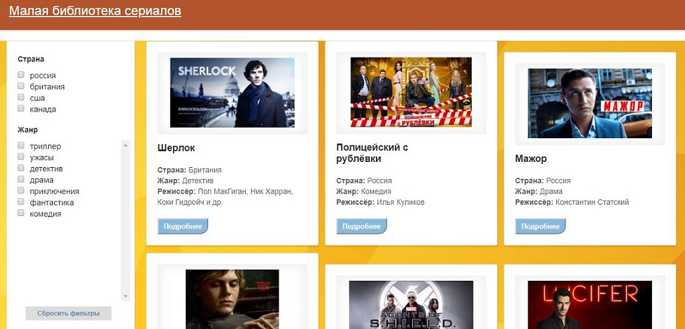
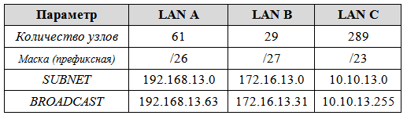
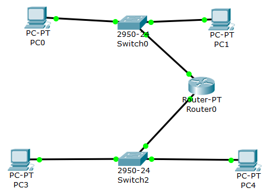
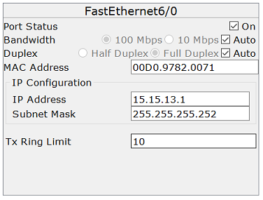
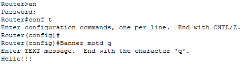

Личная страница
Меньшикова Виктория
Группа: ИДМ-18-02
Отчеты по лабораторным работам:
Лабораторная работа №1
Тема:"Экосистема разработки программ с открытым кодом"
Создание персональной страницы-отчета на GitHub и работа с git.
Отчет по лабораторной работе №1
Лабораторная работа №2
Тема:"Разработка простого веб-приложения"
Проектирование и разработка индивидуального или коллективного веб-приложения (SPA) с использованием HTML, CSS, JavaScript + JSON/XML.
Отчет по лабораторной работе №2
Проект: "Малая библиотека сериалов"
Требования к приложению:
1. Приложение должно представлять из себя хорошо оформленную базу данных с различными сериалами, их описанием, режиссерами и страной создания.
2. В приложении должен осуществляться фильтр по стране создания и жанрам.
3. При нажатии на блок с сериалом должно открываться описание с его изображением.
4. Слева окна приложения должен быть закреплённый банер с параметрами выбора фильтров по стране создания и жанрам.
Задачи:
1. Собрать команду для разработки веб-приложения (SPA) и распределить роли.
Страница команды
2. Разработать макет страницы веб-приложения.

3. Прописать стили страницы.
4. Прописать JS функционал и реализовать возможность чтения JSON.
Готовый проект
Скрыть текст
Лабораторная работа №3
Тема:"Настройка локальной сети передачи данных"
Цель данной работы - ознакомиться с принципами работы компьютерных сетей, базовой настройкой сетевого оборудования и статической маршрузитацией.
Отчет по лабораторной работе №3
Расчет диапазонов подсетей:

Порядок выполнения:
1. Разместить на рабочем поле коммутатор и два компьютера и соединить их:
2. Настроить адресацию на добавленных компьютерах:
3. Выполнить проверку работоспособности сети:
4. Добавить на рабочее поле еще один коммутатор с двумя компьютерами и настроить адресацию из другой подсети:
5. Соединить коммутаторы между собой и проверить работоспособность сети (Сеть не работает, так как коммутаторы подсоединяются только к маршрутизаторам).
6. Добавить маршрутизатор на рабочее поле:

7. Настроить интерфейсы маршрутизатора для существующих подсетей:
8. Добавить на рабочее поле еще один маршрутизатор и подключить к нему коммутатор и компьютер:
9. Выполнить сетевые настройки:
10. Соединить между собой маршрутизаторы и настроить между ними сеть с префиксом /30:

11. Проверить работоспособность сети, отправив сообщение сети A в сеть С и из сети В в сеть С:
Сообщение не было отправлено, потому что на маршрутизаторах не настроена статическая маршрутизация.
12. Настроить статическую маршрутизацию между сетями:
13. Настроить на сетевых устройствах пароли для привилегированного режима и на подключение через консоль и telnet:
14. Установить баннер на сетевое оборудование:

15. Проверка работоспособности сети:
Скрыть текст